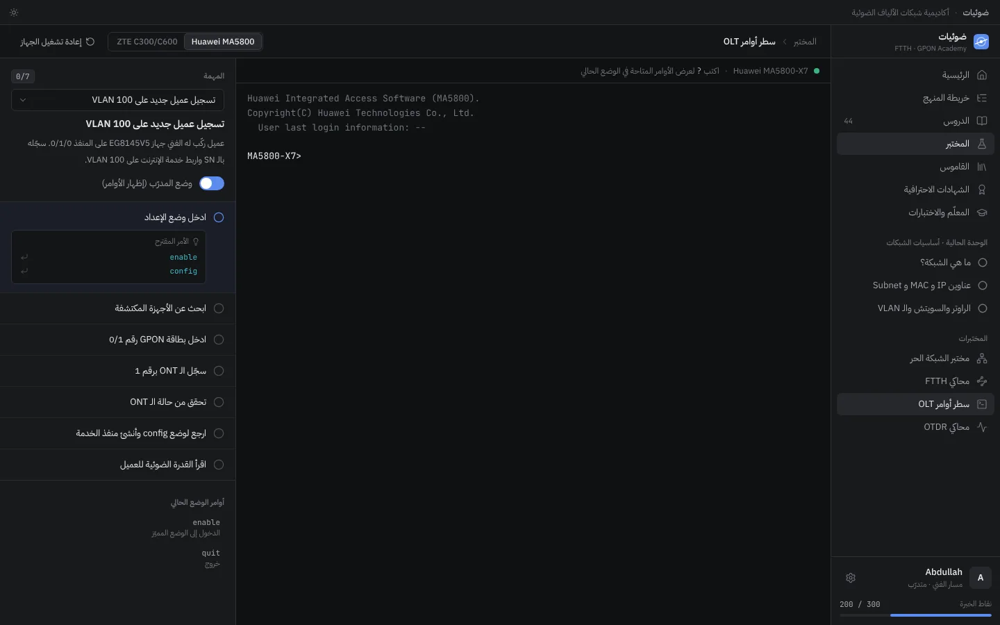
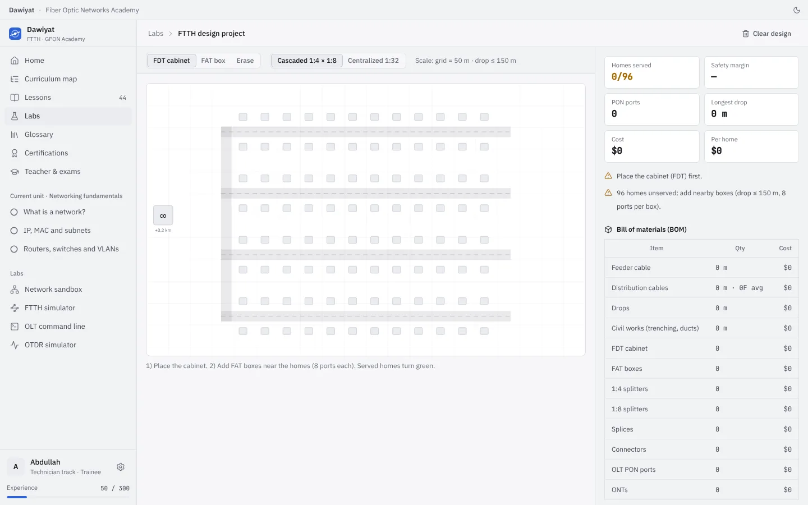
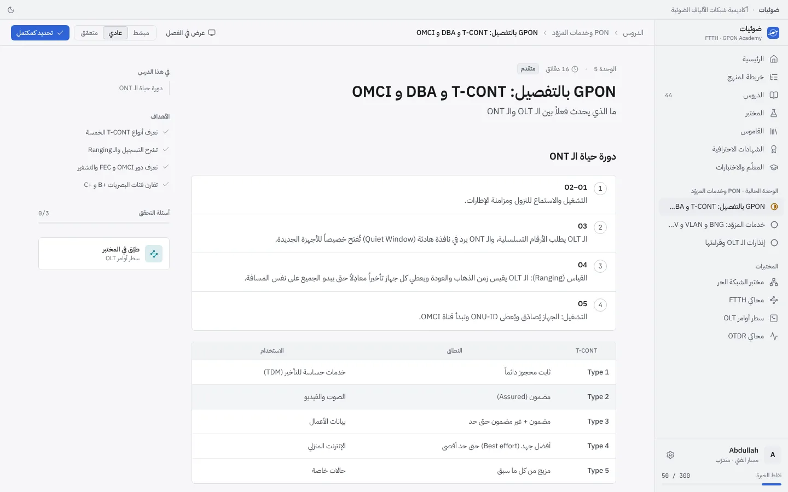
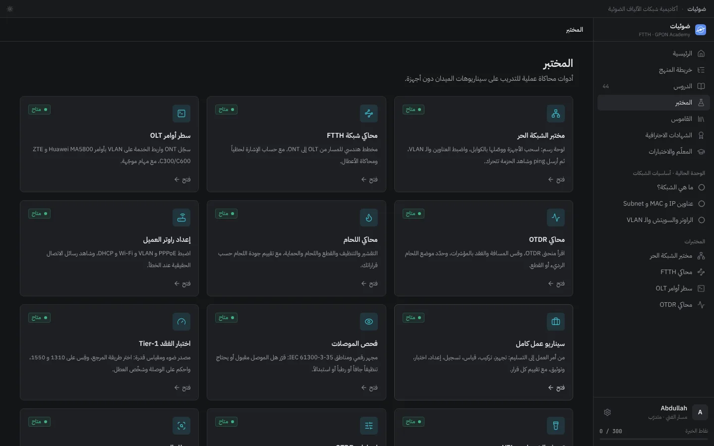

برنامج مجاني بالعربي والإنجليزي يأخذك من الصفر إلى مستوى المهندس في شبكات FTTH / GPON: دروس مبسطة، ومختبرات عملية، وتجهيز للشهادات الاحترافية. ويعمل بدون إنترنت.
حوالي 40 سؤالاً تدريبياً لكل شهادة، محدّثة حسب آخر محاور الاختبارات المنشورة رسمياً، مع شرح لكل إجابة ومحاكاة اختبار بوقت.
CCNANetwork+HCIA-DatacomSecurity+CySA+PCEPPCAP
صور من البرنامج
مظهر داكن وفاتح، وبالعربي والإنجليزي.

سطر أوامر OLT لهواوي و ZTE

مشروع تصميم شبكة حي مع التكلفة

درس بالمظهر الفاتح

المختبرات العملية
طريقة التثبيت
ثلاث خطوات، وأقل من دقيقة.
حمّل الملفاضغط زر التحميل، وانتظر حتى ينتهي تحميل الملف Dawiyat-Setup-0.4.0.exe.
افتح الملفإذا ظهرت نافذة زرقاء من ويندوز بعنوان «حمى Windows جهاز الكمبيوتر»، اضغط «مزيد من المعلومات» ثم «تشغيل على أي حال».
ثبّت وابدأاختر مكان التثبيت أو اتركه كما هو، ثم افتح «ضوئيات» من سطح المكتب واكتب اسمك.
لماذا تظهر نافذة ويندوز؟ لأن البرنامج جديد ولم يحصل بعد على شهادة توقيع رقمي، فيعرض ويندوز الناشر على أنه «غير معروف». البرنامج لا يحتاج إنترنت ولا يرسل أي بيانات، وتقدّمك محفوظ على جهازك فقط.